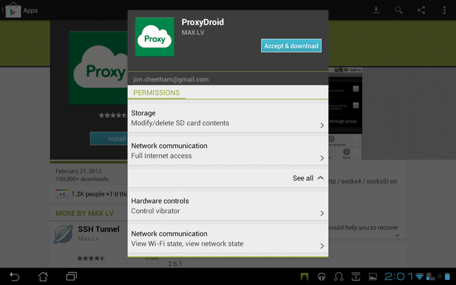
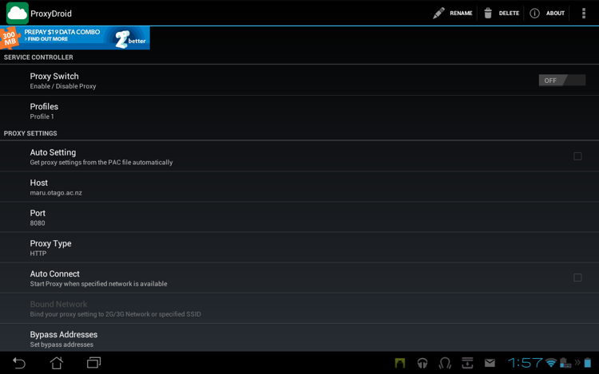
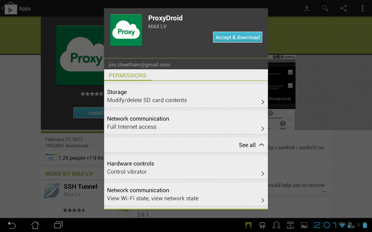
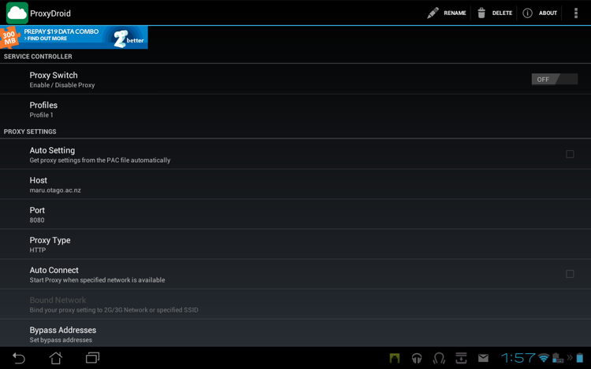

The proxy situation on Android is [an
embarrasment](http://code.google.com/p/android/issues/detail?id=1273). It's
scarcely credible, but Android didn't have a global proxy setting at all until
quite recently, and it's still not supported on many common Android versions.
In the meantime the app ecosystem has grown used to life without this basic
necessity, and many apps merrily ignore it even if it's there. The upshot is
that in many cases the only way to make interception work on Android is to do
it without relying on the proxy settings.
We used an Asus Transformer Prime TF201 with Android 4.0.3 in the examples
below - your device may differ, but the broad process should be similar.
Installing the mitmproxy certificate
====================================
The first step is to install mitmproxy's interception certificate on the
Android device. In your ~/.mitmproxy directory, there should be a file called
__mitmproxy-ca-cert.cer__ - we need to transfer this file to
__/sdcard/Downloads__ on the Android device. If this file doesn't exist for
you, your certs were generated with an older version of mitmproxy - just copy
the __mitmproxy-ca-cert.pem__ file to __mitmproxy-ca-cert.cer__ and proceed
from there.
In this case, we're using wget from Better Terminal Emulator Pro to transfer
the certificate from a local HTTP server. Other terminal applications may work,
and you might also transfer the file via external media like an SDcard:
 Once we have the certificate on the local disk, we need to import it into the
list of trusted CAs. Go to Settings -> Security -> Credential Storage,
and select "Install from storage":
Once we have the certificate on the local disk, we need to import it into the
list of trusted CAs. Go to Settings -> Security -> Credential Storage,
and select "Install from storage":
 The certificate in /sdcard/Downloads is automatically located and offered for
installation. Installing the cert will delete the download file from the local
disk:
The certificate in /sdcard/Downloads is automatically located and offered for
installation. Installing the cert will delete the download file from the local
disk:
 Afterwards, you should see the certificate listed in the Trusted Credentials
store:
Afterwards, you should see the certificate listed in the Trusted Credentials
store:
 If you're lucky enough to be working with an app that obeys the wireless proxy
settings, you're just about done - simply configure the settings to point at
mitmproxy. If not, proceed to the next step...
Working around Android's proxy shortcomings
===========================================
In response to Android's proxy situation, a number of apps have been created to
duct-tape proxy support onto the OS. These tools work by running a rudimentary
local proxy on the device, and forwarding all traffic destined for HTTP/S ports
to it using iptables. Since the proxy is running locally, it can detect what
the final IP address of the redirected traffic would have been. The local proxy
then connects to a user-configured upstream proxy, and initiates a proxy
CONNECT request to the destination IP.
Now, if the configured upstream proxy is mitmproxy, we have a slight problem.
Proxy requests from the Android device in this scheme will specify only the
destination IP address, __not__ the destination domain. Mitmproxy needs the
target domain to generate a valid interception certificate. The solution is
mitmproxy's [upstream certificate](@!urlTo("upstreamcerts.html")!@) option.
When this is active, mitmproxy makes a connection to the upstream server to
obtain the certificate Common Name and Subject Alternative Names.
Adding all this together, we can achieve reliable Android interception with
only a few more minutes of setup. The instructions below show how to set up an
Android device with
[ProxyDroid](https://play.google.com/store/apps/details?id=org.proxydroid) (the
local "duct-tape" proxy implementation) to achieve interception.
Install ProxyDroid
------------------
First, root your device - this is required to install ProxyDroid. Then install
ProxyDroid from the Google Play store:

You will be prompted for super-user access, which you must allow. Next, enter
the ProxyDroid settings, and change the proxy settings to point to your
mitmproxy instance. When you're done, it should look something like this:

In this case, our mitmproxy instance is at the host __maru.otago.ac.nz__,
running on port __8080__.
When you start mitmproxy, make sure that the upstream certificate option is set
(use the _--upstream-cert_ command-line option, or enable it interactively
using the _o_ shortcut):
If you're lucky enough to be working with an app that obeys the wireless proxy
settings, you're just about done - simply configure the settings to point at
mitmproxy. If not, proceed to the next step...
Working around Android's proxy shortcomings
===========================================
In response to Android's proxy situation, a number of apps have been created to
duct-tape proxy support onto the OS. These tools work by running a rudimentary
local proxy on the device, and forwarding all traffic destined for HTTP/S ports
to it using iptables. Since the proxy is running locally, it can detect what
the final IP address of the redirected traffic would have been. The local proxy
then connects to a user-configured upstream proxy, and initiates a proxy
CONNECT request to the destination IP.
Now, if the configured upstream proxy is mitmproxy, we have a slight problem.
Proxy requests from the Android device in this scheme will specify only the
destination IP address, __not__ the destination domain. Mitmproxy needs the
target domain to generate a valid interception certificate. The solution is
mitmproxy's [upstream certificate](@!urlTo("upstreamcerts.html")!@) option.
When this is active, mitmproxy makes a connection to the upstream server to
obtain the certificate Common Name and Subject Alternative Names.
Adding all this together, we can achieve reliable Android interception with
only a few more minutes of setup. The instructions below show how to set up an
Android device with
[ProxyDroid](https://play.google.com/store/apps/details?id=org.proxydroid) (the
local "duct-tape" proxy implementation) to achieve interception.
Install ProxyDroid
------------------
First, root your device - this is required to install ProxyDroid. Then install
ProxyDroid from the Google Play store:

You will be prompted for super-user access, which you must allow. Next, enter
the ProxyDroid settings, and change the proxy settings to point to your
mitmproxy instance. When you're done, it should look something like this:

In this case, our mitmproxy instance is at the host __maru.otago.ac.nz__,
running on port __8080__.
When you start mitmproxy, make sure that the upstream certificate option is set
(use the _--upstream-cert_ command-line option, or enable it interactively
using the _o_ shortcut):
mitmproxy --upstream-cert